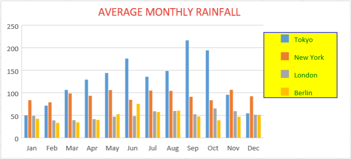

SpreadJS allows users to configure and customize legends in the charts.
Legends refer to the labels in a chart that help users in understanding the plotted data. A legend entry in a chart refers to the name of the data category that is plotted in the chart. Each legend entry in a chart possesses a unique color for better data visualization.
The default legend settings often fail to clearly communicate about the data in the very first impression. With SpreadJS, you can customize legend position, apply styles and format it as per your specific preferences. Legend customizations help your chart stand out from the rest while giving it an extremely standardized and professional look.
Example - A basic chart depicting the average monthly rainfall for different geographical regions is shown below. This chart has been formatted in SpreadJS using advanced customization properties for the legends (custom legend border style, custom fonts, custom background color and custom legend position(top right)) to represent data in a clear and effective way.

The primary goal of adding legends to the chart is to make it easy for the readers to understand the plotted information and analyse data. You can define legends in charts to show descriptions of the data lying the rows and columns of a worksheet and faciliate users in understanding the information plotted in a chart.
For example - In the above chart image, you can see the four legend entries : Tokyo, New York, London and Berlin have been added to represent the region names.
You can control whether to show or hide the legend in the chart by setting the visible parameter of the legend() method to true or false. By default, the visible parameter of the legend() method is set to true and the legends are visible in a chart.
The following example code can be used to configure legends in a chart.
| JavaScript |
Copy Code
|
|---|---|
// Configure Legend var legend = chart.legend(); legend.visible = true; chart.legend(legend); |
|
Formatting legends, customizing their position and applying styles not only enhances the aesthetic appearance of the chart but also facilitates users in creating comparatively more powerful chart presentations. The advanced customization options available for chart legends allow users to create aesthetically appealing charts as per their specific business requirements and custom analytical preferences.
The example code shared below generates a chart with customized legend format, position and style to depict average monthly rainfall for various regions.
| JavaScript |
Copy Code
|
|---|---|
<script type="text/javascript"> var chart_columnClustered, chart_columnStacked, chart_columnStacked100, sheet; window.onload = function () { var spread = new GC.Spread.Sheets.Workbook(document.getElementById("ss")); sheet = spread.getActiveSheet(); sheet.suspendPaint(); var dataArray = [ ["", 'Jan', 'Feb', 'Mar', 'Apr', 'May', 'Jun', 'Jul', 'Aug', 'Sep', 'Oct', 'Nov', 'Dec'], ["Tokyo", 49.9, 71.5, 106.4, 129.2, 144.0, 176.0, 135.6, 148.5, 216.4, 194.1, 95.6, 54.4], ["New York", 83.6, 78.8, 98.5, 93.4, 106.0, 84.5, 105.0, 104.3, 91.2, 83.5, 106.6, 92.3], ["London", 48.9, 38.8, 39.3, 41.4, 47.0, 48.3, 59.0, 59.6, 52.4, 65.2, 59.3, 51.2], ["Berlin", 42.4, 33.2, 34.5, 39.7, 52.6, 75.5, 57.4, 60.4, 47.6, 39.1, 46.8, 51.1] ]; sheet.setArray(0, 0, dataArray); // Add columnClustered chart chart_columnClustered = sheet.charts.add('chart_columnClustered', GC.Spread.Sheets.Charts.ChartType.columnClustered, 20, 110, 550, 250, "A1:M5"); // Using animation in charts chart_columnClustered.useAnimation(true); // Configure Chart Title var title = chart_columnClustered.title() title.fontSize = "18.00"; title.color = "rgb(228,65,54)"; title.text = 'AVERAGE MONTHLY RAINFALL'; chart_columnClustered.title(title); // Formatting Legend // Configure Legend's color, fontSize, backColor and fontFamily properties var legend = chart_columnClustered.legend(); // Set Visibilty of legend to true legend.visible = true; legend.color = 'Green'; legend.fontSize = 12; legend.fontFamily = 'Calibri'; legend.backColor = 'Yellow'; // Customize Legend Position // Change legend's position to topRight var legendPosition = GC.Spread.Sheets.Charts.LegendPosition; legend.position = legendPosition.topRight; // Customize Legend Style // Change legend's borderstyle legend.borderStyle.width = 1; legend.borderStyle.color = "blue"; legend.borderStyle.backColor = "Red"; chart_columnClustered.legend(legend); sheet.resumePaint(); }; </script> |
|